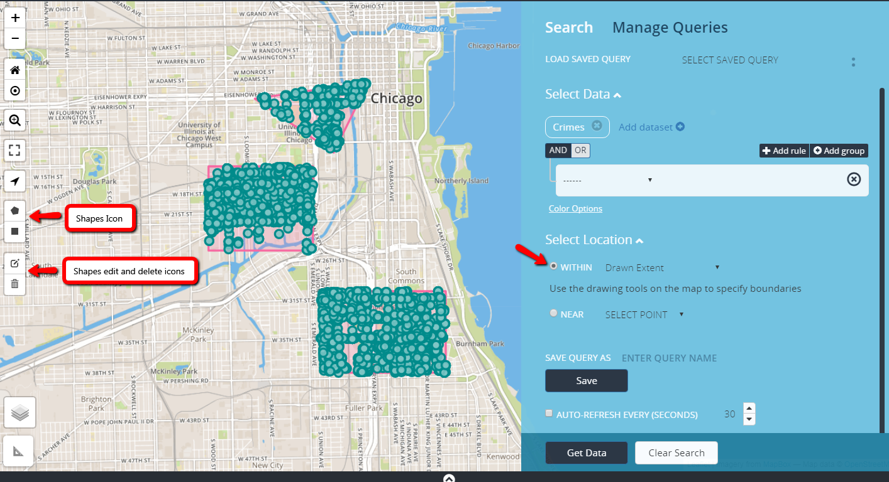

Searching Within an Area
You can search within a pre-defined area on the map, including an feature to let you draw on the map to find the data you need.
Map Extent
A map extent is the portion of area shown in a map. Map extents usually have a rectangular shape. Map extent can be changed by zooming and panning.
Citywide
Searches boundaries within the City of Chicago.
Ward
Searches within a city ward.
Zip Code
Searches within a city zip code.
Drawn Extent
Drawn Extent is located in the Find Data panel under Select Location; it is used to create polygon and/or rectangle shapes to run results from a specific location on a map. When the Drawn Extent feature is activated the shape, edit, and delete buttons appears on the grid.
How to use drawn extent:
- In the find data panel, setup a search and activate drawn extent in the select location section.
- Select a shape image on the grid, when hovering on a button, it provides information about the button.
- To draw polygon shape, select the polygon image on the map, the image will activate, a cursor will appear with text "Click to start drawing a shape".
- Begin adding points on the map in the area desired after last point is complete, text will appear "Click first point to close this shape". To complete the shape, click finish on the polygon icon.
- To draw rectangle shape, select the rectangle image on the map, a cursor will appear with text "Click and Drag to draw a rectangle". To complete the shape release the mouse to complete the drawing.
- Select Get Data to executed the search, all available results will appear within the shapes on the map.
